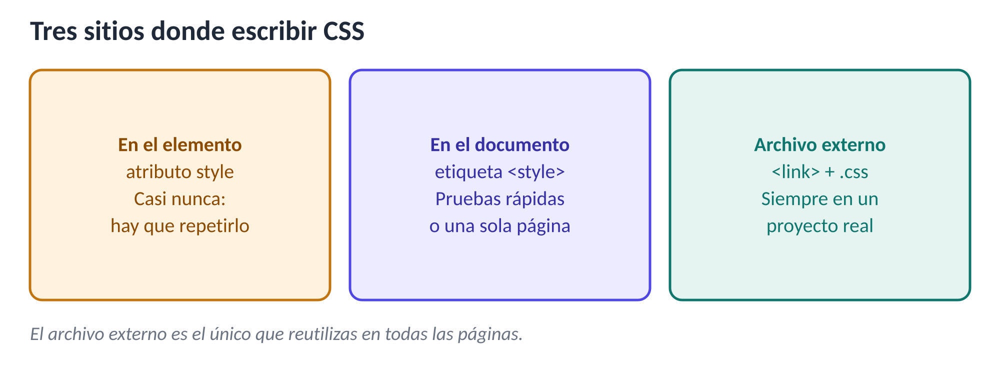
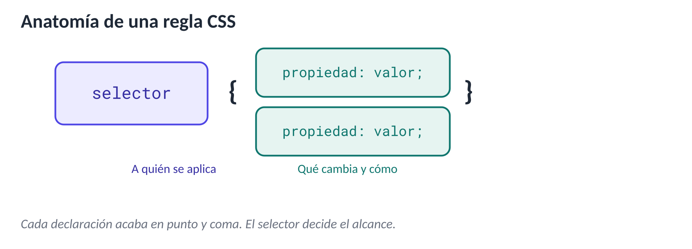
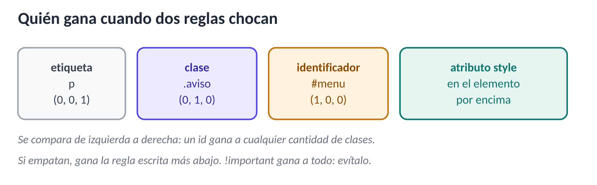
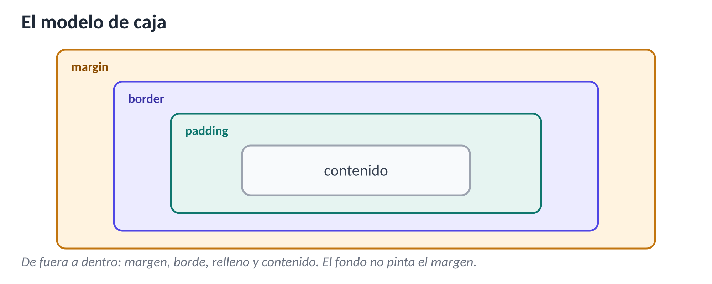
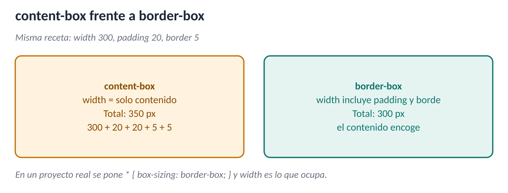
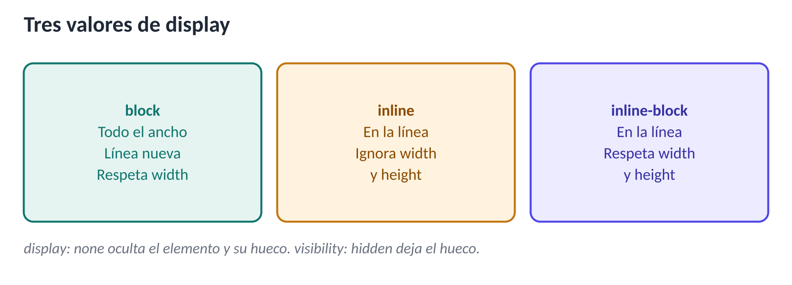

UT3. Hojas de estilo CSS¶
Cómo usar este dosier¶
HTML dice qué es cada cosa de una página: un título, un párrafo, un enlace. CSS dice cómo se ve: el color, el tamaño de letra, el espacio alrededor, dónde se coloca. Esta unidad te enseña a controlar el aspecto de cualquier página que hayas escrito en la UT2.
Es un dosier para leer con el editor abierto y una página HTML cualquiera a mano. Copia cada ejemplo, cámbialo y mira qué pasa en el navegador. Para ver cómo se ha calculado el estilo de un elemento, pulsa F12 en el navegador y abre la pestaña «Elementos»: lo usarás en casi todos los bloques.
A lo largo del texto encontrarás estas cajas:
Definición
Un término que tienes que saber explicar con tus propias palabras.
Ejemplo
Un caso concreto con su código.
Ojo
Un error típico o una confusión frecuente.
Predice
Una pregunta para pensar antes de seguir leyendo. Escribe tu respuesta y luego compruébala.
Comprueba
Preguntas o pruebas cortas al final de cada bloque. Si no sabes contestarlas sin mirar, vuelve a leer el bloque.
Qué vas a aprender¶
Al terminar esta unidad deberías ser capaz de:
- Explicar para qué sirve CSS y por qué se separa del HTML.
- Escribir una regla CSS y enlazar una hoja de estilos externa.
- Elegir el selector más preciso para cada elemento.
- Predecir qué estilo gana cuando dos reglas chocan.
- Dar formato a texto, colores, fondos y enlaces.
- Calcular el tamaño real de una caja con margen, borde y relleno.
- Controlar cómo se muestra o se oculta un elemento con
display,visibilityyoverflow.
Índice¶
| Bloque | Contenido |
|---|---|
| 1 | Qué es CSS y cómo se escribe |
| 2 | Selectores |
| 3 | Herencia, cascada y especificidad |
| 4 | Valores: colores y unidades |
| 5 | Texto, fondos y enlaces |
| 6 | El modelo de caja |
| 7 | Mostrar, ocultar y desbordar |
| Anexos | Glosario, mapa resumen y autoevaluación |
Bloque 1. Qué es CSS y cómo se escribe¶
1.1 Contenido y presentación¶
HTML y CSS se complementan. El HTML guarda el contenido y su estructura; el CSS guarda el aspecto. Si los separas, la misma página puede verse de formas distintas (en un móvil, en pantalla grande o impresa) sin tocar el contenido.
CSS
CSS (Cascading Style Sheets, hojas de estilo en cascada) es el lenguaje que controla el aspecto visual de un documento HTML. Se escribe como una lista de reglas que dicen a qué elementos se aplica cada estilo.
CSS ha ido creciendo por versiones: CSS1 fue la primera oficial, CSS2 y CSS2.1 corrigieron errores y añadieron funciones, y CSS3 se divide en módulos que evolucionan por separado. Hoy se habla simplemente de «CSS» y el W3C mantiene cada módulo.
1.2 Tres sitios donde escribir CSS¶
Hay tres formas de aplicar estilos a un HTML.

En el propio elemento, con el atributo style:
En el documento, dentro de <style> en la cabecera:
En un archivo externo, enlazado con <link>:
| Forma | Dónde se escribe | Cuándo usarla |
|---|---|---|
| En el elemento | Atributo style |
Casi nunca: hay que repetirlo etiqueta a etiqueta |
| En el documento | Etiqueta <style> |
Pruebas rápidas o una sola página |
| Archivo externo | Archivo .css con <link> |
Siempre en proyectos reales: un archivo estiliza todas las páginas |
Ojo
Si el <link> no carga estilo alguno, casi siempre es la ruta de href. Revisa lo que aprendiste de rutas relativas en la UT2 y mira en F12 > Red si el archivo da error 404.
1.3 Anatomía de una regla¶
Regla CSS
Una regla CSS tiene un selector, que indica a qué elementos se aplica, y un bloque entre llaves con una o varias declaraciones. Cada declaración es un par propiedad: valor;.

Los comentarios van entre /* y */ y pueden ocupar varias líneas. Úsalos para separar secciones del archivo.
Comprueba
- Crea
estilos.csscon una regla que ponga todos los<h1>de color rojo y enlázalo desde un HTML. ¿Cambia el color? - Quita el punto y coma de la primera declaración de una regla con dos. ¿Qué pasa con la segunda?
- ¿Qué ventaja tiene el archivo externo frente a
styleen cada etiqueta?
Bloque 2. Selectores¶
El selector decide a qué elementos afecta una regla. Elegir bien el selector es la mitad de saber CSS.
2.1 Los tres básicos¶
| Selector | Se escribe | Elige |
|---|---|---|
| Etiqueta | p |
Todos los elementos de esa etiqueta |
| Clase | .destacado |
Todos los elementos con class="destacado" |
| Identificador | #principal |
El elemento con id="principal" |
<p>Un párrafo normal.</p>
<p class="destacado">Un párrafo destacado.</p>
<p id="principal">El párrafo principal.</p>
Clase e identificador
Una clase se puede repetir en tantos elementos como quieras, y un elemento puede llevar varias (class="a b"). Un identificador es único: solo puede haber un elemento con cada id en el documento.
El selector universal * elige todos los elementos de la página.
2.2 Combinar selectores¶
Los selectores se pueden combinar para ser más precisos.
| Selector | Ejemplo | Elige |
|---|---|---|
| Agrupación | h1, h2 |
Los elementos de cualquiera de los dos |
| Descendiente | ul li |
Los li que están dentro de un ul, a cualquier profundidad |
| Hijo directo | p > a |
Los a que son hijos inmediatos de un p, no los nietos |
| Hermano adyacente | h2 + p |
El p que va justo después de un h2 |
| Hermanos generales | h2 ~ p |
Todos los p que van después de un h2 en el mismo nivel |
| Clase y etiqueta | p.premio |
Los p que además llevan la clase premio |
.videojuego .genero { color: green; } /* .genero dentro de .videojuego */
article h3 { color: purple; } /* h3 dentro de article */
Ojo
.a .b (con espacio) elige un .b dentro de un .a. .a.b (sin espacio) elige un elemento que tiene las dos clases a la vez. Un espacio cambia todo.
2.3 Selectores de atributo¶
Eligen elementos por un atributo de su etiqueta.
| Selector | Elige |
|---|---|
input[type="email"] |
Los input cuyo type es exactamente email |
a[href*="google"] |
Los enlaces cuyo href contiene «google» |
a[href^="https"] |
Los enlaces cuyo href empieza por «https» |
a[href$=".pdf"] |
Los enlaces cuyo href acaba en «.pdf» |
2.4 Pseudoclases y pseudoelementos¶
Una pseudoclase elige un elemento según su estado o posición, sin necesitar una clase. Se escribe con un dos puntos.
| Pseudoclase | Elige |
|---|---|
:first-child |
El primer hijo de su padre |
:last-child |
El último hijo |
:nth-child(3) |
El tercer hijo |
:nth-child(odd) / :nth-child(even) |
Los hijos impares o pares |
:hover |
Un elemento con el ratón encima |
Un pseudoelemento elige una parte de un elemento o crea contenido nuevo. Se escribe con dos puntos dobles.
::before y ::after insertan contenido antes o después del elemento y necesitan la propiedad content.
Predice
Tienes una lista de cinco <li> y esta regla: li:nth-child(odd) { color: red; }. ¿Qué elementos se ven en rojo? Pruébalo y comprueba si acertaste.
Comprueba
- Escribe el selector más preciso para los
<h3>que están dentro de un<article>. - ¿Qué diferencia hay entre
p ayp > a? - Escribe un selector que elija los enlaces que acaban en
.pdf.
Bloque 3. Herencia, cascada y especificidad¶
3.1 Herencia¶
Muchas propiedades se transmiten de un elemento a sus hijos. Si pones color: blue a un <div>, los párrafos que tiene dentro también se ven azules, salvo que alguno tenga un estilo propio.
Se heredan casi siempre las propiedades de texto (color, font-family, font-size, line-height). No se heredan las de caja (margin, padding, border, background).
Ejemplo
«Texto 1» hereda el azul del padre. «Texto 2» tiene una regla propia y se ve rojo.3.2 Cuando dos reglas chocan¶
Cuando varias reglas afectan al mismo elemento y a la misma propiedad, el navegador decide cuál gana con tres criterios, por este orden:
- Importancia. Una declaración con
!importantgana a las demás. Evítalo: se queda como parche y complica todo lo demás. - Especificidad. Gana el selector más específico.
- Orden. Si la especificidad es la misma, gana la regla que está escrita más abajo.
3.3 Calcular la especificidad¶
Imagina tres contadores, de mayor a menor peso: (id, clase, etiqueta).

| Selector | Contador | Peso |
|---|---|---|
p |
(0, 0, 1) | Bajo |
.mensaje p |
(0, 1, 1) | Medio |
.mensaje .importante |
(0, 2, 0) | Mayor |
#importante |
(1, 0, 0) | El mayor de los tres |
style="…" en el elemento |
Por encima de todos | |
* |
(0, 0, 0) | El menor |
Se comparan de izquierda a derecha: un solo id pesa más que cualquier cantidad de clases.
Ejemplo
p { color: black; }
.mensaje p { color: blue; }
.mensaje .importante { color: red; }
#importante { color: orange; }
#importante, con (1, 0, 0), así que el texto se ve naranja.
Predice
Dos reglas con el mismo selector p, una con color: red; y otra con color: blue;, escritas en ese orden. ¿De qué color se verá el párrafo? ¿Y si cambias el orden?
Ojo
Si tu estilo «no funciona», no subas la especificidad a ciegas. Abre F12, mira el elemento y fíjate qué reglas aparecen tachadas: te dice quién le está ganando.
Comprueba
- Calcula el contador de
ul li.activoy de#menu a. ¿Cuál gana? - Un
<li>dentro de undivconcolor: purple, ¿de qué color se ve si ellino tiene regla propia? ¿Por qué? - ¿Por qué no conviene usar
!importanten todas partes?
Bloque 4. Valores: colores y unidades¶
4.1 Colores¶
CSS acepta varias formas de escribir un color.
| Formato | Ejemplo | Notas |
|---|---|---|
| Nombre | red, teal |
Unos 140 nombres definidos |
| Hexadecimal | #FF0000 |
Pares RR, GG, BB |
| RGB | rgb(255, 0, 0) |
Rojo, verde y azul de 0 a 255 |
| RGBA | rgba(255, 0, 0, 0.5) |
Añade transparencia de 0 a 1 |
| HSL | hsl(0, 100%, 50%) |
Matiz, saturación y luminosidad |
Para una web real conviene definir la paleta una sola vez con variables CSS y reutilizarla:
4.2 Unidades absolutas y relativas¶
Las absolutas tienen un tamaño fijo: px (píxeles, la más usada), cm, mm, in, pt, pc. Las relativas dependen de otra medida:
| Unidad | Relativa a | Ejemplo |
|---|---|---|
% |
El elemento padre | width: 50% |
em |
El tamaño de letra del elemento padre | font-size: 2em |
rem |
El tamaño de letra de la raíz html (16 px por defecto) |
font-size: 1.5rem |
vw |
1 % del ancho de la ventana | width: 90vw |
vh |
1 % del alto de la ventana | height: 20vh |
Ejemplo
Un <div> con font-size: 12px contiene tres párrafos:
| Párrafo | Valor | Tamaño final | Cálculo |
|---|---|---|---|
| A | 2em |
24 px | 2 × 12 |
| B | 1rem |
16 px | Raíz (16 px) |
| C | 150% |
18 px | 1,5 × 12 |
Ojo
El em se acumula: si anidas elementos con 1.2em, cada nivel multiplica el anterior y la letra crece sin que lo esperes. rem no tiene ese problema porque siempre mira a la raíz. En la práctica se usan sobre todo px, rem y %.
Comprueba
- ¿Cuántos píxeles mide un
font-size: 1.5remsi no has tocado el dehtml? - Escribe en CSS una caja que ocupe el 50 % del ancho del padre y otra que ocupe el 90 % del ancho de la ventana.
- ¿Por qué
remes más cómodo queempara tamaños de letra?
Bloque 5. Texto, fondos y enlaces¶
5.1 Texto y fuentes¶
| Propiedad | Para qué sirve | Ejemplo |
|---|---|---|
color |
Color del texto | color: #222; |
font-family |
Tipo de letra, con alternativas | font-family: "Segoe UI", Arial, sans-serif; |
font-size |
Tamaño | font-size: 1.125rem; |
font-style |
Cursiva | font-style: italic; |
text-align |
Alineación | text-align: center; |
text-decoration |
Subrayado | text-decoration: none; |
text-transform |
Mayúsculas o minúsculas | text-transform: uppercase; |
En font-family se escribe una lista de alternativas separadas por comas. El navegador usa la primera que tenga instalada. Termina siempre con una familia genérica (serif, sans-serif, monospace) por si no hay ninguna de las anteriores. Los nombres con espacios van entre comillas.
5.2 Fondos¶
| Propiedad | Para qué sirve |
|---|---|
background-color |
Color de fondo |
background-image |
Imagen de fondo: url("fondo.png") |
background-repeat |
repeat (por defecto), repeat-x, repeat-y o no-repeat |
background-position |
Dónde se coloca: right top, center |
background-size |
cover para cubrir toda la caja, contain para que quepa entera |
Con background se pueden escribir varias a la vez:
5.3 Enlaces¶
Un enlace tiene cuatro estados, y cada uno se estiliza con su pseudoclase.
a:link { color: #0f766e; } /* sin visitar */
a:visited { color: #6d28d9; } /* visitado */
a:hover { color: #c2750f; text-decoration: underline; } /* ratón encima */
a:active { color: #b91c1c; } /* mientras se pulsa */
Ojo
El orden importa: :hover va después de :link y :visited, y :active después de :hover. Si los cambias, algunos estados dejan de verse.
Comprueba
- Escribe un
font-familycon una fuente concreta y una genérica de reserva. - Haz que los enlaces no estén subrayados salvo cuando pasas el ratón por encima.
- ¿Qué diferencia hay entre
background-size: coverycontain?
Bloque 6. El modelo de caja¶
6.1 Todo elemento es una caja¶
Modelo de caja
Cada elemento HTML se dibuja como una caja con cuatro capas, de dentro hacia fuera: el contenido, el relleno (padding, espacio entre el contenido y el borde), el borde (border) y el margen (margin, espacio exterior que separa la caja de las demás).

El fondo (background) se pinta detrás del contenido y del relleno, pero no del margen.
Los atajos de margin y padding aceptan uno a cuatro valores:
| Escritura | Significado |
|---|---|
margin: 10px |
Los cuatro lados |
margin: 10px 20px |
Arriba y abajo 10, izquierda y derecha 20 |
margin: 10px 20px 5px 0 |
Arriba, derecha, abajo, izquierda (el sentido del reloj) |
margin: 0 auto |
Sin margen vertical y centrada horizontalmente (si tiene width) |
6.2 Tamaño de las cajas¶
width y height dan el ancho y el alto. max-width y min-width ponen límites: la caja crece o se encoge dentro de ese rango. Con auto, el navegador calcula el tamaño según el contenido.
6.3 box-sizing: cuánto ocupa una caja de verdad¶
Por defecto (content-box), width mide solo el contenido, y el padding y el borde se suman por fuera. Con border-box, width incluye contenido, relleno y borde.
Predice
Una caja tiene width: 300px; padding: 20px; border: 5px solid black;. ¿Cuántos píxeles ocupa en horizontal con content-box? ¿Y con border-box? Mídelo en F12 antes de seguir.
Con content-box: 300 + 20 + 20 + 5 + 5 = 350 px. Con border-box: 300 px.

Muchos proyectos aplican border-box a todo para evitar sorpresas:
Ojo
Los márgenes verticales de dos cajas seguidas se solapan: si una tiene margin-bottom: 20px y la siguiente margin-top: 30px, la separación es de 30 px, no de 50.
Comprueba
- Calcula el ancho total de una caja con
width: 200px; padding: 10px; border: 2px solid; box-sizing: content-box;. - ¿Cómo centras horizontalmente una caja de ancho fijo?
- ¿Qué cambia en el ancho total si añades
box-sizing: border-boxal caso 1?
Bloque 7. Mostrar, ocultar y desbordar¶
7.1 display¶
display define qué tipo de caja es un elemento.

| Valor | Comportamiento |
|---|---|
block |
Ocupa todo el ancho y empieza en línea nueva. Respeta width, height y márgenes |
inline |
Se coloca en la línea con el texto. Ignora width y height |
inline-block |
Va en línea, pero respeta width y height |
none |
El elemento desaparece y no ocupa sitio |
Los <p>, <div> y <h1> son de tipo block por defecto; <span> y <a>, inline. Más adelante verás flex y grid, que son los valores con los que se colocan las cajas en la UT4.
7.2 visibility¶
visibility: hidden oculta el elemento pero deja su hueco. Con display: none el hueco desaparece también.
Predice
Tienes un <h1>, un <h2> y un <h3> seguidos y aplicas visibility: hidden al <h2>. ¿Se mueve el <h3> hacia arriba? ¿Y con display: none?
7.3 overflow¶
Cuando el contenido no cabe en la caja, overflow decide qué pasa.
| Valor | Efecto |
|---|---|
visible |
El contenido se sale por fuera (por defecto) |
hidden |
Se oculta lo que no cabe |
scroll |
Barras de desplazamiento siempre |
auto |
Barras solo si hacen falta |
Comprueba
- Crea tres
<span>conpadding: 10pxy borde. ¿Se respeta el relleno vertical eninline? ¿Y eninline-block? - Un
divde 100 × 100 px con un texto largo: pruébalo con los cuatro valores deoverflowy anota la diferencia.
Anexo A. Glosario¶
| Término | Significado |
|---|---|
| Regla | Selector más un bloque de declaraciones |
| Declaración | Pareja propiedad: valor; |
| Selector | Parte de la regla que dice a qué elementos se aplica |
| Clase | Nombre reutilizable que se asigna con class y se elige con . |
| Identificador | Nombre único que se asigna con id y se elige con # |
| Pseudoclase | Selector por estado o posición, como :hover |
| Pseudoelemento | Selector de una parte o contenido creado, como ::before |
| Herencia | Transmisión de un valor del padre a sus hijos |
| Especificidad | Peso de un selector para decidir qué regla gana |
| Modelo de caja | Contenido, relleno, borde y margen de cada elemento |
rem |
Unidad relativa al tamaño de letra de la raíz |
Anexo B. Mapa resumen¶
Regla CSS = selector { propiedad: valor; }
Quién gana: !important > especificidad (id > clase > etiqueta) > orden
Caja: margin > border > padding > contenido
Tamaño: content-box suma padding y borde, border-box los incluye
Visible: display: none (sin hueco) visibility: hidden (con hueco)
Anexo C. Autoevaluación¶
Preguntas cortas¶
- ¿Qué ventaja tiene separar HTML y CSS?
- Enumera las tres formas de incluir CSS en un HTML y di cuál se recomienda.
- ¿Cuál es la diferencia entre un
idy una clase? - ¿Qué elige
ul > li? ¿Yh2 + p? - ¿Qué propiedades se heredan normalmente y cuáles no?
Tipo test¶
- ¿Qué selector tiene más especificidad?
- a)
p - b)
.aviso - c)
#aviso - d)
p.aviso
- a)
- Con
box-sizing: content-box, ¿cuánto ocupa horizontalmente una caja conwidth: 200px; padding: 10px; border: 5px solid;?- a) 200 px
- b) 210 px
- c) 220 px
- d) 230 px
- ¿Qué hace
visibility: hidden?- a) Elimina el elemento y su hueco
- b) Oculta el elemento pero conserva su hueco
- c) Lo hace transparente al 50 %
- d) Lo saca de la página
- Un
divconfont-size: 20pxcontiene un párrafo confont-size: 1.5em. ¿Cuánto mide la letra del párrafo?- a) 15 px
- b) 20 px
- c) 30 px
- d) 24 px
Razona¶
- Un compañero dice que su estilo
p { color: red; }«no funciona» porque el texto sigue azul. Explica tres causas posibles y cómo comprobarías cada una con F12.